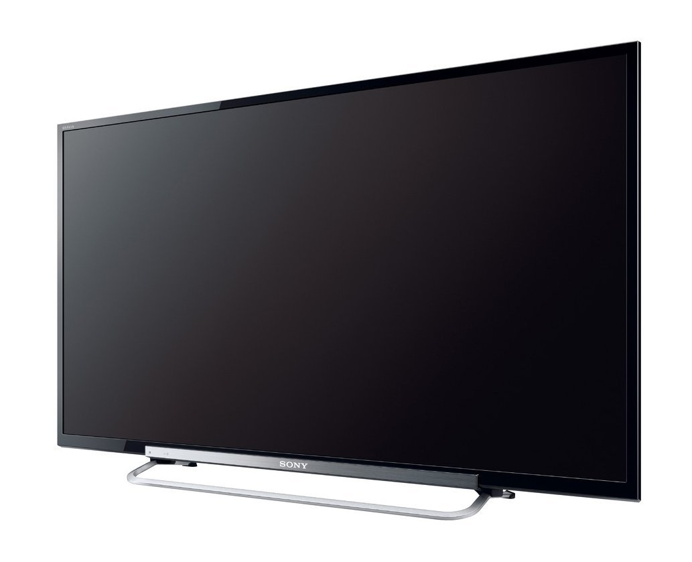
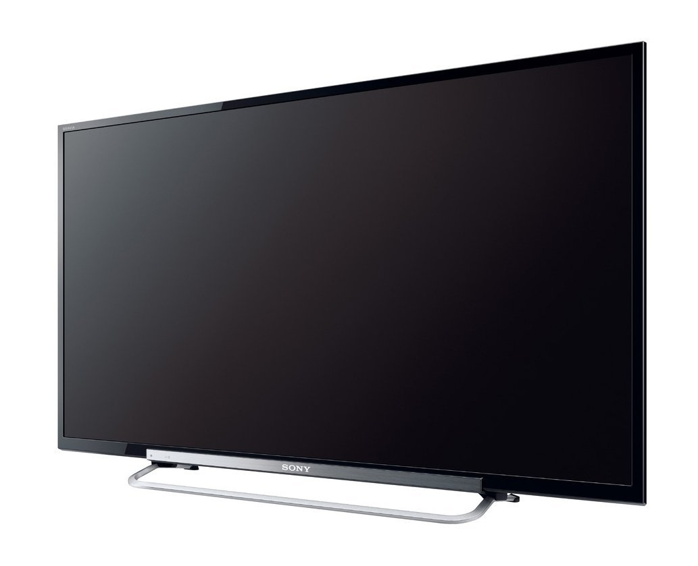

Sony
 

Da una lacrima che scorre sulla guancia dell'eroe ai fili d'erba sul campo nello stadio, il modello R47 ti regala dettagli mai visti prima. Prova le immagini con risoluzione Full HD e potenziate da una suite di tecnologie che assicurano un'immagine più nitida, scene d'azione più fluide e un contrasto cromatico mozzafiato.
Riduzione dei disturbi e tecnologie di ottimizzazione dell'immagine che potenziano la chiarezza e il contrasto e migliorano la percezione della profondità su schermo. I LED bianchi posizionati dietro il TV direzionano la luce solo dove serve, assicurando bianchi più luminosi e neri più profondi.
I nostri TV sono dotati delle più recenti tecnologie per garantire le migliori prestazioni abbinate a un impatto ambientale minimo Questo TV potrebbe contenere del piombo in alcune parti o componenti, qualora non fossero disponibili alternative tecnologiche, in conformità con le clausole di eccezione ai sensi della Direttiva RoHS. La tecnologia a oscuramento della cornice Dynamic Edge LED controlla l'emissione luminosa dei singoli gruppi di LED, a seconda dell'immagine sullo schermo. Usa solo la quantità di luce necessaria, risparmiando fino al 20% di energia. La classificazione energetica dell'UE per questo modello è "A". I prodotti dotati di classificazione "A+" offrono l'efficienza energetica più elevata, mentre i prodotti con "G" quella più bassa.